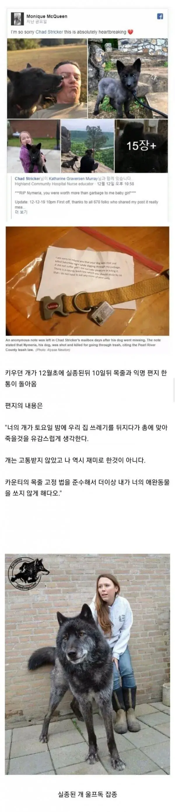

이건 견주가 총알 값 보내줘야한다.

이건 견주가 총알 값 보내줘야한다.
병신같은새끼 사람답게 글 써라
저딴 걸 목줄 없이 풀어놓은 새끼면 같이 뒈져야지 개빠냐
목줄없이 키운건지 목줄이 끊어진건지 모르잖아
개가 사람보다 소중할순 없지 않나???
닉부터 키배 처발린 병신같네 ㅋㅋ
이댓글은 사람이 쓴것인가?
니 생각에 병신같았으면 닉값 좀 하지 그랬냐
아고....
안타깝네 ㅠㅠ
막짤보니 총 쏠만했네; 생긴게 걍 늑대네
쏘면서도 후달렸을듯
빗나가면 조땐다하고
찾아보니 막짤의 개는 그냥 다른 울프독이고
죽은 개는 10개월이라 좀 큰 개정도로 보임.
그정도면 늑대나 코요테로 오해하기 딱 작당하긴 함.
뭐 그렇다 해도 돌아다니는 개가 유해한지 무해한지는 알 수가 없으니 쏴죽인것도 뭐라 할 수 없다 봄
잘못한건 주인새끼지
아마 개가 아니라 다른 야생동물이라고 생각하고 쏴ㅛ을꺼임. 우리동네도 코요테 종종 다녀서 목줄 풀린 개가 우리집 쓰레기통 뒤지면 코요테라고 생각햤을듯
난 신지누나를 쏠수없어..!
좀 큰 개면 총맞아도 올게 왔구나 해야지
목줄이 앙증맞아보이네
쇠사슬정도로는 만들어야할듯
견주도 같이 보내줘야된다
와....개라고 하는게 맞나
늑대네 ㄷㄷ
애완견의 잘못은 99퍼가 주인 잘못
견주가 죽었어야됐는데 불쌍한 울프독 ㅠ
제 사유재산(총알)을 댁의 강아지가 가지고 간것 같군요
울프독 키우는 유튜버 있던데 아득바득 입마개 안하더라 울프독은 입마개 필수 견종 아니라고
필구견종 아니면 개 상격 보고 판단할 일이지 울프견이니까 무조건 해야할건 아님
그 개들도 성격마다 다를텐데도 필수라고 해놓은거 아님?
법으로 따지자고 하면 할 말은 없는데 그 입마개 관련 규정이 납득이 안 가긴 해...
누가봐도 법의 취지가 보이는데 모든 견종을 다 고려할 수 없는 법의 빈틈을 가지고 무슨 법이 위험하지 않은 견종으로 판결한 것 마냥 필수견종 아니면 무조건 해야할 건 아님 ㅇㅈㄹ하고 있네.
울프독이 안 위험해서 필수견종이 아니겠냐? 울프독이라는 견종을 키우는 경우 자체가 드물어 통계상 개물림 사고에 높은 건 수를 기록하지 않았고, 한국이 입마개 필수 견종 지정 시 참조한 영미권 법안에서 울프독이 애초에 '사육 및 반입 금지'에 의해 명시 되지 않아 빠진 것일 수도 있음.
울프독은 그 위험성 때문에 수 많은 국가에서 사육이 금지되거나 입마개 필수가 강요되는데
응~ 한국에서는 입마개 필수 견종에 성문상 포함되어 있지 않으니까 성격보고 안해도 돼~ ㅇㅈㄹ이 말이 된다고 생각하냐?
니가 지금 뭐 존나 합리적이고 객관적인거 같지? 걍 개찐따 같아 보일 뿐임.
아득바득 우기는건 너같은데?
얜 머지 ㅋㅋ
ㅇㄷ
논란은 돈이된다
어우 대댓 어지러운게 많네
쏜사람도 확인해보고나서 씨발... 하면서 착잡했겠네
견주 잘못만난 개가 불쌍하다
견주가 죽게 놔둔거지
저건 ㅅㅂ 간디도 쏘겠다
be폭력각성 ㅋㅋㅋㅋ
ㄷㄷㄷㄷ 저건 늑대잖아
뭐하다 잃어버린겨
쏜 쪽 대처가 침착하고 예의바르네
저건 늑대라고 생각해도 쩔 수지 주인이 간수 잘했어야했다
개는 안타깝네
죽을만 했다
늑대새끼가 우리집 쓰레기통 파먹는다?
총 쏠 만하지
애견인으로써 안타깝다만, 저정도 개면 목줄 관리 못한 주인의 잘못 100%
결정적인 오타는 좀 내지 말자..
견주도 개 따라가야겠네